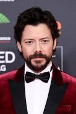
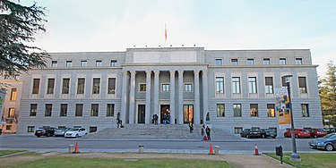
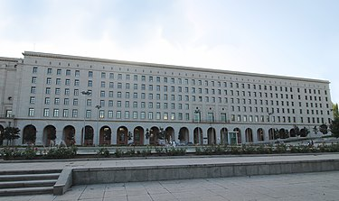

Sobre a série de TV
La Casa de Papel é uma série de televisão de drama policial espanhola criada por Álex Pina. A trama traça dois assaltos muito preparados liderados por um homem conhecido como O Professor (Álvaro Morte), um na Casa da Moeda Real da Espanha e outro no Banco Central da Espanha. A série foi inicialmente planejada como uma minissérie de 15 episódios dividida em duas partes, a primeira com nove episódios e a segunda com seis. Teve exibição original na rede espanhola Antena 3 entre 2 de maio de 2017 a 23 de novembro do mesmo ano. La casa de papel conta com Úrsula Corberó, Álvaro Morte, Itziar Ituño, Pedro Alonso, Alba Flores, Miguel Herrán e Jaime Lorente no elenco principal.
A Netflix adquiriu os direitos globais de streaming no final de 2016. O serviço de streaming readaptou a duração dos episódios aumentando-os para 22 episódios no total e dividiu a minissérie completa em duas partes, a primeira com 13 episódios e a segunda com 9. A primeira parte foi lançada no catálogo da Netflix em 20 de dezembro de 2017, seguida pela segunda parte em 6 de abril de 2018. Em abril de 2018, a Netflix renovou a série com um orçamento significativo para mais 16 novos episódios no total. A parte 3, com oito episódios, foi lançada em 19 de julho de 2019. A parte 4, também com oito episódios, foi lançada em 3 de abril de 2020. Um documentário envolvendo os produtores e o elenco estreou na Netflix no mesmo dia, intitulado Money Heist: The Phenomenon (La casa de papel: El Fenómeno). Em julho de 2020, a Netflix renovou a série para uma quinta e última parte com 10 episódios. A quinta parte foi dividida em subpartes chamados de "volumes", onde o volume um foi lançado em 3 de setembro de 2021 e o volume dois em 3 de dezembro do mesmo ano, finalizando a série.
A série foi filmada em Madrid, Espanha. Filmagens significativas das partes 3, 4 e 5 também foram filmadas no Panamá, Tailândia, Itália (Florença) e Portugal (Lisboa). A narrativa é contada em tempo real e depende de flashbacks, saltos no tempo, motivações ocultas dos personagens e um narrador não confiável para a complexidade. A série subverte o género roubo ao ser contada da perspectiva de uma mulher, Tóquio (Úrsula Corberó), e ter uma forte identidade espanhola, onde a dinâmica emocional compensa o crime estratégico perfeito.
A série recebeu vários prêmios, incluindo melhor série dramática no 46º Prêmio Emmy Internacional, bem como aclamação da crítica por seu enredo sofisticado, dramas interpessoais, direção e por tentar inovar a televisão espanhola. A canção italiana antifascista "Bella ciao", que toca várias vezes ao longo da série, tornou-se um sucesso de verão em toda a Europa em 2018. Em 2018, La casa de papel era a série em língua não-inglesa mais assistida e uma das mais assistidas séries em geral na Netflix, com uma ressonância particular vinda de telespectadores da Europa mediterrânea e de latino-americanos.
Devido a repercussão boa da série, em dezembro de 2021 foi anunciado um remake coreano da série, intitulado La Casa de Papel: Coreia e a série sobre o personagem Berlim, que foi chamada de Berlim. O remake estreiou em 24 de junho de 2022 na Netflix, enquanto a série Berlim teve estreia no catálogo do streaming no dia 28 de Dezembro de 2023.
Sinopse
A narrativa da série gira em torno de um assalto de vários dias preparado contra a Casa da Moeda Real, localizada na cidade de Madrid, na Espanha. Um homem misterioso, conhecido como "O Professor", tinha por objetivo realizar o maior assalto da história. Para executar esse plano ambicioso, recrutou uma equipe formada por oito pessoas com habilidades específicas em suas áreas de atuação, e que por suas histórias pessoais, não teriam nada a perder. O plano previa invadir o local e imprimir 2,4 bilhões de euros. Para isso alcançar tal façanha, os assaltantes precisariam passar 11 dias dentro da Casa da Moeda, e nesse período, além das atribuições relacionadas à produção das cédulas, também precisariam lidar com as forças policiais de elite e 67 reféns.
1ª temporada: Partes 1 e 2 (2017)
Após salvar uma assaltante de um roubo ao banco de ser presa, um homem conhecido como "O Professor" lhe propõe um assalto incomparável. Assim que reúne uma equipe de oito pessoas, o Professor instruí os assaltantes a roubarem a Casa da Moeda da Espanha, localizada na cidade de Madrid na Espanha. Os oito ladrões têm o nome código de distintas e aleatórias cidades ao redor do mundo: Tóquio, Moscou, Berlim, Nairóbi, Rio, Denver, Helsinque e Oslo. Vestido com macacões vermelhos com uma máscara do pintor espanhol Salvador Dalí, o grupo de ladrões força 67 reféns imprimirem €2.4 bilhões de euros, para depois fugirem em um túnel secreto. O Professor auxilia o grupo em local externo longe do alcance da polícia e da inspetora Raquel. Durante as partes 1 e 2, os ladrões têm dificuldades em seguir as regras predefinidas dentro da Casa da Moeda e enfrentam violência, isolamento, motim e uma crescente falta de sono.
Trailer parte 01
Trailer parte 02
2ª temporada: Partes 3 e 4 (2019-2020)
Dois a três anos após o assalto na Casa da Moeda da Espanha, os ladrões curtem espalhados em diversos locais. No entanto, quando a polícia Europol captura Rio com um telefone interceptado, o Professor retoma os antigos planos de Berlim de invadir o Banco de Espanha para forçar a Europol a entregar Rio. Ele e Raquel (agora "Lisboa"), que se apaixonaram e são um casal, juntam a gangue incluindo Mónica (agora "Estocolmo") e recrutam três novos membros: Bogotá, Palermo, Marselha, Manila, Pamplona e Logronho. Os ladrões disfarçados esgueiram-se para o banco fortemente protegido, tomam reféns e, eventualmente, obtêm acesso aos segredos de ouro e de Estado, enquanto o Professor e Lisboa estão em uma van em movimento para se comunicar com os ladrões e a polícia. Uma brecha no banco é impedida, forçando a polícia, liderada pelo coronel Luis Tamayo e pela inspetora grávida Alicia Sierra, a liberar Rio para os ladrões.
Trailer parte 03
Trailer parte 04
3ª temporada: Parte 5 - Vol. 1 & Vol. 2 (2021)
O Professor acaba sendo encontrado por Alicia Sierra, mas a gravidez e as acusações contra a policial fazem ela refletir em continuar com seu plano de entregar o líder do grupo de ladrões ou se juntar aos mesmos. Uma ameaça surge entre os reféns: uma rebelião instigada por Arturo Roman, ex-amante de Estocolmo antes do primeiro assalto na Casa da Moeda, coloca em risco a segurança de todos no prédio. Mesmo tentando lidar com a ameaça de Arturo dentro do banco, os ladrões também tem que lidar com cinco militares que invadem o local com a ajuda de Gandía, o responsável pela morte de Nairóbi que desestabilizou o grupo por completo. Nesse cenário complicado, uma batalha caótica com armamento pesado se inicia dentro do Banco de Espanha forçando os assaltantes lutarem ferozmente por suas vidas.
Trailer volume 01
Trailer volume 02
Produção
Roteiro e escrita
A série foi criada pelo roteirista Álex Pina e pelo diretor Jesús Colmenar durante seus anos de colaboração desde 2008. Depois de terminar seu trabalho no drama de prisão espanhol Vis a vis, eles deixaram a Globomedia para abrir sua própria produtora, chamada Vancouver Media, em 2016. Para seu primeiro projeto, eles consideraram filmar uma comédia ou desenvolver uma história de roubo para a televisão,[18] com o último nunca tendo sido tentado antes na televisão espanhola. Junto com ex-colegas do Vis a vis, eles desenvolveram La casa de papel como um projeto para tentar coisas novas sem interferência externa. Pina estava firme em fazer uma série limitada.
Inicialmente intitulada Los Desahuciados (Os Despejados) na fase de concepção, a série foi desenvolvida para combinar elementos do gênero de ação, thrillers e surrealismo, embora ainda seja credível. Pina viu uma vantagem sobre os filmes típicos de assalto no fato de que o desenvolvimento dos personagens poderia abranger um arco narrativo consideravelmente mais longo. Os personagens deveriam ser mostrados de vários lados para quebrar os preconceitos dos espectadores sobre vilania e manter seu interesse durante todo o show. Os principais aspectos do enredo planejado foram escritos no início, enquanto as melhores partes da história foram desenvolvidas gradativamente para não sobrecarregar os escritores. O escritor Javier Gómez Santander comparou o processo de escrita sobre a maneira de pensar do Professor, em "andar por aí, escrever opções, consultar engenheiros", mas observou que a ficção permite que a polícia seja escrita de forma mais burra quando necessário.
O início das filmagens foi definido para janeiro de 2017, permitindo cinco meses de pré-produção. A narrativa foi dividida em duas partes para considerações financeiras. Os codinomes dos ladrões baseados nas cidades, que o jornal espanhol ABC comparou aos codinomes baseados nas cores no filme de roubo de Quentin Tarantino, Reservoir Dogs, de 1992, foram escolhidos aleatoriamente na primeira parte, embora lugares com alta audiência também foi levada em consideração para os nomes de código dos novos ladrões na parte 3. As primeiras cinco linhas do roteiro piloto levaram um mês para serem escritas, porque os escritores não conseguiram fazer o Professor ou Moscou trabalhar como narrador. Tóquio como uma narradora não confiável, flashbacks e saltos no tempo aumentaram a complexidade da narrativa, mas também tornaram a história mais fluída para o público. O episódio piloto exigiu mais de 50 versões de roteiro até que os produtores estivessem satisfeitos. Os scripts posteriores seriam concluídos uma vez por semana para acompanhar as filmagens.
Escolha do elenco
A escolha de atores ocorreu no final de 2016, durando mais de dois meses. Os personagens não estavam totalmente definidos no início deste processo e tomaram forma com base na atuação dos atores. Os diretores de elenco Eva Leira e Yolanda Serrano estavam procurando atores com a habilidade de interpretar ladrões empáticos com amor crível e conexões familiares. A Antena 3 anunciou o elenco em março de 2017 e lançou trechos de audição da maioria dos atores do elenco no aftershow da série Tercer Grado e em seu site.
O Professor foi criado como um vilão carismático, mas tímido, que poderia convencer os ladrões a segui-lo e fazer o público simpático à resistência dos ladrões contra os bancos poderosos. No entanto, desenvolver o papel do Professor se mostrou difícil, já que o personagem não seguia as convenções arquetípicas e os produtores não tinham certeza sobre seu grau de importância. Enquanto os produtores desenvolviam sua personalidade como "Salva", eles estavam originalmente procurando por um tipo de professor de Harvard de 50 anos com a aparência do ator espanhol José Coronado. O papel foi proposto a Javier Gutiérrez, mas ele já estava comprometido em estrelar o filme Campeones. Enquanto isso, os diretores de elenco defendiam Álvaro Morte, a quem conheciam de sua colaboração na longa novela espanhola El secreto de Puente Viejo, embora sua experiência na televisão no horário nobre fosse limitada naquele momento. Passando por todo o processo de casting e abordando o papel por meio de análises externas e não da experiência pessoal, Morte descreveu o professor como "uma tremenda caixa de surpresas" que "acabam moldando esse personagem porque ele nunca para de gerar incertezas", tornando-o pouco claro para o público se o personagem é bom ou ruim. Os produtores também descobriram que sua aparência de professor de escola primária deu ao personagem mais credibilidade.
Pedro Alonso foi escalado para interpretar Berlim, a quem La Voz de Galicia viria a caracterizar como um "personagem frio, hipnótico, sofisticado e perturbador, um homem inveterado com graves problemas de empatia, um ladrão de colarinho branco que despreza os colegas e os considera inferiores". A interpretação do personagem pelo ator foi inspirada pelo encontro casual que Alonso teve um dia antes de receber seu roteiro de audição, com "uma pessoa inteligente" que era "provocadora ou até manipuladora" com ele. Alonso viu altas habilidades de observação e uma compreensão incomum resultando em um comportamento de personagem não convencional e imprevisível. Semelhanças entre Berlim e o personagem de Najwa Nimri, Zulema, na série de TV Vis a vis de Pina, não foram intencionais. A conexão familiar entre o Professor e Berlin não estava no roteiro original, mas foi construída na história dos personagens no final da parte 1, depois que Morte e Alonso repetidamente propuseram fazê-lo.
Os produtores acharam a protagonista e narradora, Tokio, entre os personagens mais difíceis de desenvolver, já que eles estavam originalmente procurando por uma atriz mais velha para interpretar a personagem que não tinha nada a perder antes de conhecer o Professor. Úrsula Corberó acabou conseguindo o papel; sua voz foi levada em consideração durante o casting, já que ela foi a primeira voz que o público ouviu no show. Jaime Lorente desenvolveu a risada característica de Denver durante o processo de seleção de elenco. Dois atores do elenco haviam aparecido em séries de TV anteriores de Álex Pina: Paco Tous (Moscou) estrelou a série de TV Los hombres de Paco de 2005, e Alba Flores (Nairóbi) estrelou Vis a vis. Flores foi convidada a interpretar Nairóbi sem audição quando Pina percebeu no final da fase de desenvolvimento que o show precisava de outro membro feminino da gangue. Para o papel oposto aos ladrões, Itziar Ituño foi escalada para interpretar a inspetora Raquel Murillo, a quem Ituño descreveu como uma "mulher forte e poderosa em um mundo masculino, mas também sensível em sua vida privada". Ela se inspirou na personagem de O Silêncio dos Inocentes, Clarice Starling, uma estudante do FBI com uma vida familiar complicada que desenvolve simpatia por um criminoso.
Os atores souberam da renovação do programa pela Netflix antes que os produtores os contatassem para retornar. Em outubro de 2018, a Netflix anunciou o elenco da parte 3; o elenco principal de volta incluía Pedro Alonso, levantando especulações sobre seu papel na parte 3. Entre os novos membros do elenco estava o ator argentino Rodrigo de la Serna, que viu uma possível conexão entre o nome de seu personagem e a lenda do futebol argentino Martín Palermo, e a estrela de Vis a vis, Najwa Nimri. Cenas de especiais do astro do futebol brasileiro e fã da série Neymar como monge foram filmadas para a parte 3, mas foram excluídas do streaming sem repercussão na narrativa até que as acusações judiciais contra ele fossem retiradas no final de agosto de 2019. Uma pequena aparição da atriz espanhola Belén Cuesta em dois episódios da parte 3 levantou fãs e especulações da mídia sobre seu papel na parte 4.
Elenco principal


Filmagens
As partes 1 e 2 foram filmadas consecutivamente na região da grande Madrid de janeiro a agosto de 2017. O episódio piloto foi gravado em 26 dias, enquanto todos os outros episódios tiveram cerca de 14 dias de filmagem. A produção foi dividida em duas unidades para economizar tempo, com uma unidade filmando cenas envolvendo o professor e a polícia, e a outra filmando cenas com os ladrões. O enredo principal se passa na Casa da Moeda da Espanha em Madrid, mas as cenas externas foram filmadas na sede do Conselho Superior de Investigações Científicas (CSIC) por sua semelhança com a Casa da Moeda, e no telhado da Escola Técnica Superior de Engenheiros Aeronáuticos, parte da Universidade Politécnica de Madrid. A propriedade de caça onde os ladrões planejam seu golpe foi filmada na fazenda Finca El Gasco em Torrelodones. As filmagens internas ocorreram nos antigos sets de Vis a vis em Colmenar Viejo e no jornal diário nacional espanhol ABC em Torrejón de Ardoz para cenas na imprensa. Como o show foi projetado como uma série limitada, todos os sets foram destruídos assim que a produção da parte 2 terminou.

O Conselho Superior de Investigações Científicas, o principal local de filmagens da parte 1 e 2 de La casa de papel, como a Casa da Moeda da Espanha.
As partes 3 e 4 também foram filmadas consecutivamente, com 21 a 23 dias de filmagem por episódio. A Netflix anunciou o início das filmagens em 25 de outubro de 2018, e as filmagens da parte 4 terminaram em agosto de 2019. Em 2018, a Netflix abriu seu primeiro centro de produção europeu em Tres Cantos, perto de Madrid, para produções novas e existentes da Netflix; as filmagens principais foram movidas para um cenário três vezes maior que o usado nas partes 1 e 2.[54] O enredo principal se passa no Banco Central da Espanha em Madrid, mas o exterior foi filmado no complexo do Ministério do Desenvolvimento do Nuevos Ministerios. Uma cena em que dinheiro cai do céu foi filmada na Praça Callao. Ermita de San Frutos em Carrascal del Río, serviu como o exterior do mosteiro italiano onde os ladrões planejam o assalto. As cenas de autocaravana do Professor e Lisboa foram filmadas nas praias desertas de Las Salinas em Almeria para fazer o público sentir que os personagens estão protegidos da polícia, embora a sua localização exata não seja revelada a princípio. Cenas subaquáticas dentro do cofre foram filmadas no Pinewood Studios no Reino Unido. O início da parte 3 também foi filmado na Tailândia, nas ilhas Guna Yala no Panamá, e em Florença, Itália, o que ajudou a conter a sensação claustrofóbica das duas primeiras partes, mas também foi uma expressão de as repercussões globais da trama.

O Nuevos Ministerios, o principal local de filmagens da parte 3 de La casa de papel, como o Banco Central da Espanha.
Música
A música tema da série, "My Life Is Going On", foi composta por Manel Santisteban, que também atuou como compositor em Vis a vis. Santisteban entrou em contado a cantora espanhola Cecilia Krull para co-escrever e interpretar as letras, que falam sobre ter confiança nas próprias habilidades e no futuro. A música-tema é tocada atrás na sequência de abertura com modelos de papel das principais configurações da série. A principal fonte de inspiração de Krull foi a personagem Tokio no primeiro episódio da série, quando o Professor lhe oferece uma saída para um momento de desespero. As letras são em inglês como o idioma natural de Krull no momento da escrita.
A canção italiana antifascista "Bella ciao" toca várias vezes ao longo da série e acompanha duas cenas-chave emblemáticas: No final da primeira parte, o Professor e Berlim cantam em preparação para o roubo, abraçando-se como resistência contra o estabelecimento, e na segunda parte que desempenha durante a fuga dos ladrões da Casa da Moeda, como uma metáfora para a liberdade. Sobre o uso da música, Tokio relata em uma de suas narrações: "A vida do Professor girava em torno de uma única ideia: Resistência. Seu avô, que lutou contra os fascistas na Itália, ensinou-lhe a música e ele nos ensinou". A canção foi levada ao show pelo escritor Javier Gómez Santander. Ele tinha ouvido "Bella ciao" em casa para animá-lo, já que ficou frustrado por não encontrar uma música adequada para o meio da parte 1. Ele estava ciente do significado e da história da música e sentiu que representava valores positivos. "Bella ciao" se tornou um hit de verão na Europa em 2018, principalmente devido à popularidade da série e não aos temas graves da música.